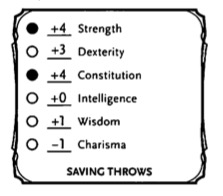
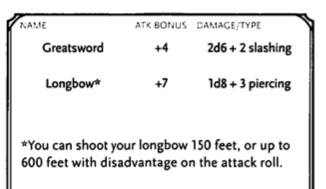

A round represents about 6 seconds in the game world. During a round, each participant takes a turn.
The DM determine who might be surprised. If neither side tries to be stealthy, they automatically notice each other. Otherwise, the DM compares Dexterity (Stealth) checks of anyone hiding with the passive Wisdom (Perception) score of each creature on the opposing side. Any PC or NPC that doesn't notice a threat will be surprised at the beginning of battle.
If you're surprised, you can't move or take an action on your first turn of the combat, and you can't take a reaction until that turn ends.
A member of the group can be surprised even if the other members aren't.
Initiative determines the order of turns during combat. When combat starts, every participant makes a Dexterity check to determine their place in the initiative order. The DM makes one roll for an entire group of identical creatures, so each member of the group acts at the same time.
The initiative order ranks the combatants from the one with the highest Dexterity check to the lowest.
If a tie occurs, the DM decides the order among tied DM-controlled creatures and players decide the order among tired characters.
On your turn you can move a distance up to your speed and take one action.
Various class features, spells and other abilities let you take an additional action on your turn called a bonus action. You can take a bonus action only when a special ability, spell or other feature of the game allows you to do something as a bonus action. You otherwise don't have to take one.
You can take only one bonus action on your turn, so much decide which to take when you have more than one available.
You can choose when to take the bonus action during your turn, unless the bonus action's timing is specified.
Communication. You can communicate however you are able, through brief utterances and gestures, as you take your turn.
Objects. You can interact with one object or feature of the environment for free, during either you move or your action. Example, you can open a door as you stride toward a foe.
If you want to interact with a second object, you need to use your action.
Some magic items and other special objects always require an action to use, as stated in their descriptions.
The DM might require you to use an action for any of these activities if it requires special care or when it presents an unusual obstacle. Example, the DM could reasonably expect you to use your action to open a stuck door or turn a crank to lower a drawbridge.
Certain special abilities, spells and situations allow you to take a special action called a reaction. A reaction is an instant response to a trigger or some kind, which can occur on your turn or someone else's.
The opportunity attack is the most common type of reaction.
In combat, PCs and NPCs are in constant motion, often using movement and position to gain the upper hand.
On your turn, you can move a distance up to your speed. You can use as much or as little of your speed as you like on your turn, following the rules here. Your move can include jumping, climbing and swimming.
You can break up your movement on your turn, using some of your speed both before and after your action. Example, if you have a speed of 30 feet, you can move 10 feet, search for a trap door, and then move 20 feet.
If you take an action that includes more than one weapon attack, you can break up your movement even further by moving between those attacks.
If you have more than one speed, such as your walking speed and flying speed, you can switch back and forth between your speeds during your move. Whenever you switch, subtract the distance you've already moved from the new speed. The result determine how much farther you can move.
Example
If you have a speed of 30 and a flying speed of 60 because a wizard cast the fly spell on you, you could fly 20 feet, walk 10 feet and then leap into the air to fly 30 more feet.
Combatants can be slowed down by difficult terrain - low furniture, rubble, undergrowth, steep stairs, snow and shallow bogs. Even the space of another creature, whether hostile or not, counts as difficult terraint.
Every foot of movement in difficult terrain costs 1 extra foot. This rule is true even if multiple things in a space count as difficult terrain.
Combatants often find themselves lying on the ground, either because they are knocked down or they throw themselves down.
You can drop prone without using any of your speed.
Standing up takes more effort; doing so costs an amount of movement equal to half you speed.
Example
If your speed is 30 feet, you must spend 15 feet of movement to stand up.
You can't stand up if you do not have enough movement left or your speed is 0.
To move while prone you must crawl or use magic such as teleportation. Every foot movement while crawling costs 1 extra foot. Crawling 1 foot in difficult terrain, therefore, costs 3 feet of movement.
You can move through a non-hostile's creature space.
In contrast, you can move through a hostile creature's space only if it as least two sizes larger or smaller than you (creature sizes are detailed in the Monster Manual and Adventure Book).
If you move out of an enemy's reach, you provoke an opportunity attack.
When you take an action on your turn, you can take one of the actions presented here, an action you gained from your class, or a special feature, or an action that you can improvise.
When you describe an action not detailed elsewhere in the rules, the DM tells you whether that action is possible and what kind of roll you need to make, if any, to determine success or failure.
With this action you can make one melee or ranged attack. Certain features, such as the Extra Attack feature a fighter gets at 5th level, allow you to make more than one attack.
You make an attack by making an attack roll, which has the following structure:
You gain extra movement for your turn. The increase equals your speed, after applying any modifiers. With a speed of 30 feet, for example, you can move up to 60 feet on your turn if you use dash.
Any increase or decrease to your speed changes this additional movement by the same amount.
If you take Disengage action, you movement does not provoke opportunity attacks for the rest of the turn.
You focus entirely on avoiding attacks. Until the start of your next turn any attack roll made against you has disadvantage if you can see the attacker, and you make Dexterity saving throws with advantage.
You can lend aid to another creature when you take the Help action. The creature you aid gains advantage on the next ability check it makes to perform the task you are helping with, provided that it makes the check before the start of your next turn.
You can also aid a friendly creature in attacking a creature within 5 feet of you. If your ally attacks the target before your next turn, the first attack roll is made with advantage.
When you take the Hide action you must make a Dexterity (Stealth) check in an attempt to hide.
When a creature can't see you, you have advantage on attack rolls against it. Conversely, when you attack a target you cannot see, you have disadvantage on the attack roll.
Sometimes you want to get the jump on your foe or wait for a particular circumstance before you act. To do so, you can take the Ready action. Ready lets you act using a reaction before the start of your next turn. You can only take on reaction per round.
First, decide what circumstance will trigger your reaction. Then choose the action you will take in response to that trigger.
Example
"If the cultist steps on the trapdoor, I'll pull the lever that open sit."
"If the goblin steps next to move, I move away 30 feet (my speed)."
When the trigger occurs you can either choose to take your reaction or ignore it.
Spells. A spell must have a casting time of 1 action to be readied, and holding onto the spell's magic until you release it with you reaction requires concentration.
Example
If you are concentrating on the web spell and ready magic missile, your web spell ends. And if you take damage before you release magic missile with your reaction, your concentration might be broken.
When you take the Search action, you devote your attention (turn) to finding something. Depending on the nature of your search, the DM might have you make a Wisdom (Perception) check or an Intelligence (Investigation) check.
Your normally interact with an object while doing something, such as when you draw a sword as part of an attack.
When an object requires your action for its use, you take the Use An Object action. This action is also used when you want to interact with more than one object on your turn.
When you make an attack, your attack roll determines whether your attack hits or misses. To make an attack roll, roll 1d20 and add the appropriate modifiers. If the total of the roll plus modifiers is equal to or greater than the target's Armor Class (AC), the attack hits.
Ability Modifiers. The ability modifier used for a melee weapon is Strength (as seen below) and the ability modifier for a ranged weapon is Dexterity.

Weapons with the finesse or thrown property can use either one.
Some spells require an attack roll. The CLeric uses Wisdom and the Wizard uses Intelligence as an ability modifier.
Proficiency Bonus. If a character is proficient with the weapon they are using, they can add their proficiency bonus to the attack roll. When you make a spell attack you add your proficiency bonus to the attack roll.
If d20 roll for an attack is 20, the attack hits regardless of any modifiers or the target's AC. In addition, the attack is a critical hit, which means you get to roll all of the attack's damage twice and add them together, then add any relevant modifiers as normal. If the attack involves other damage dice, such as from the rogue's Sneak Attack feature, you roll these dice twice as well.
Example
If you score a critical hit with a dagger, roll 2d4 for the damage rather than 1d4, then add your relevant ability modifier.
If the d20 roll is a natural 1, the attack misses regardless of any modifiers or the target's AC.